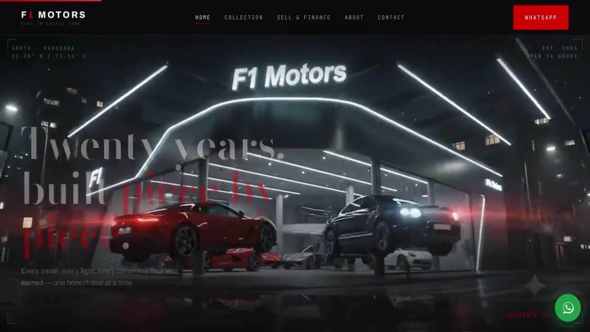
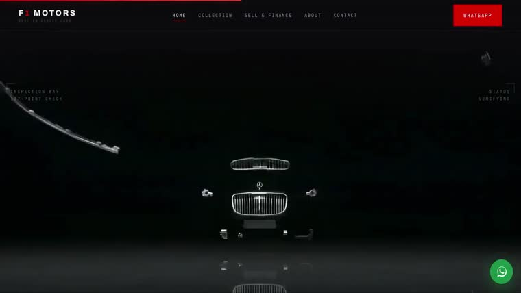
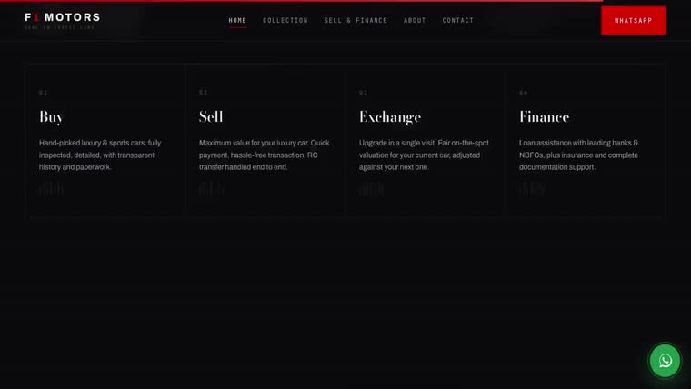
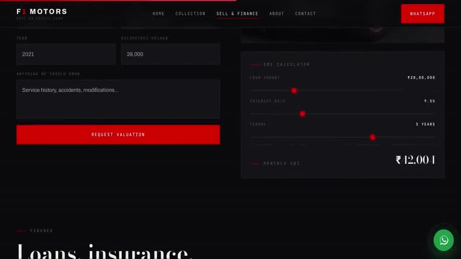

- Scope
- Six pages + admin panel
- Status
- Shipped
- Palette
F1 MOTORS
F1 Motors sells pre-owned luxury cars in Vadodara. The stock changes constantly, the buying decision is emotional, and the finance question comes up before anyone picks up the phone. The site had to handle all three.
- Client
- F1 Motors, Vadodara
- Scope
- Six-page site, admin panel
- Role
- Design, build, deployment
- Status
- Shipped
The brief
Every competing dealer site in the region was the same thing: a grid of thumbnails, a phone number, and a contact form nobody fills in. The cars themselves were the most persuasive asset in the business and none of it reached the screen.
The ask was a site that felt closer to the showroom than to a listings page — while staying something the team could actually run themselves, without calling a developer every time a car sold.
The build
The homepage is built around a scroll-scrubbed video sequence. Rather than autoplaying a showreel, the footage is tied frame-by-frame to scroll position — the visitor controls the pace through the collection, and the camera move stops exactly where they stop.
That choice does real work beyond looking good: it removes the decision to press play, and it makes the browsing motion itself feel like the car is being presented.
The detail
- Live EMI calculator. Finance is the first real question a buyer has. Putting the monthly figure on the same screen as the car answers it before it becomes a reason to leave.
- Stock admin panel. The team adds, edits and retires listings themselves. No developer in the loop, no stale inventory sitting live after a sale.
- Six pages, one shot. Collection, individual vehicle, finance, about, contact and admin — each built to feel like a continuation of the same sequence rather than a separate destination.
What shipped
A complete, deployed site the dealership operates without us. The cinematic treatment carries the emotional half of the sale; the calculator and the admin panel carry the practical half.
It is the clearest example of what the studio argues for: motion that is doing a job, sitting on top of software that a real business runs its day on.